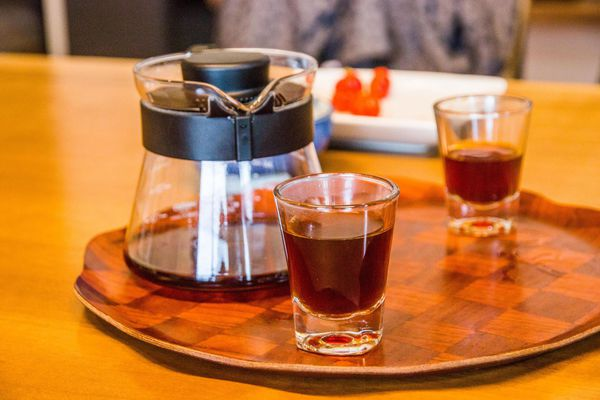

順著知本林道旁的小徑蜿蜒而上，推開那扇黑鐵交織成方格的大門就踏進了林道咖啡烘豆工作室，山林間的斜瓦小屋只有簡樸的陳設，和許多等待分享的故事，親手蓋的房以及隱身其中的烘豆室，隨時散發陣陣咖啡香氣。
使用了美國原裝進口Diedrich 5公斤烘豆機，呈現最佳的咖啡產地風味。
主要供應淺焙至中焙的咖啡豆，沒有咖啡的苦澀，各種果酸及香氣為了呈現最乾淨的品質，生豆進行風選吹除雜質、烘豆前後手工挑除瑕疵豆，為你的健康做最嚴格的把關。
地址:台東縣卑南鄉溫泉村鎮樂36-8號
營業時間: 09:00–11:30 14:00–17:30
連絡電話: (09)1077-1677